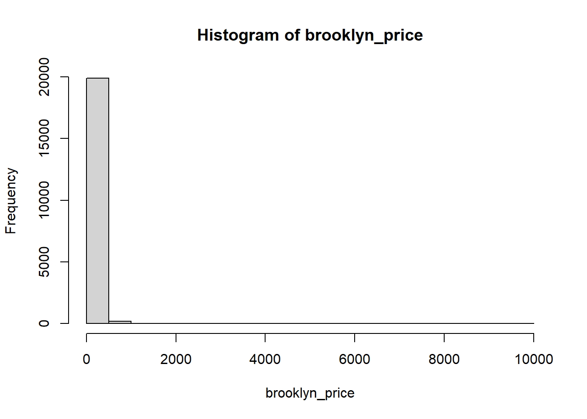
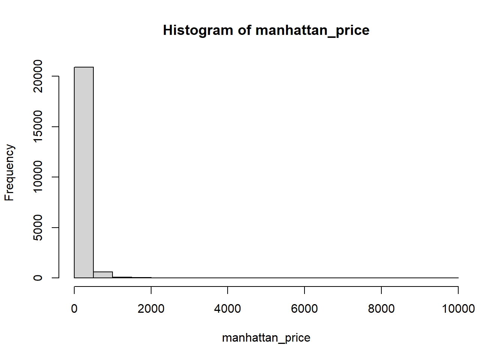
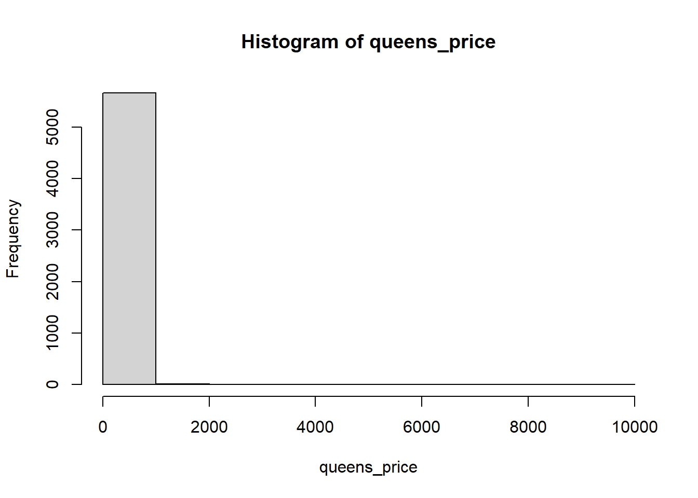
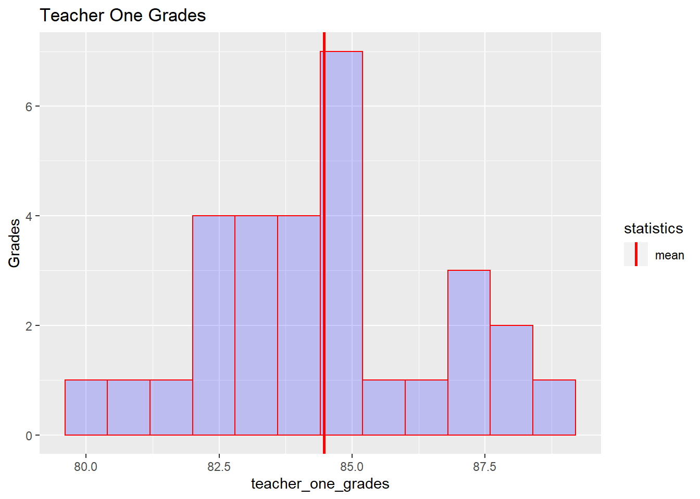
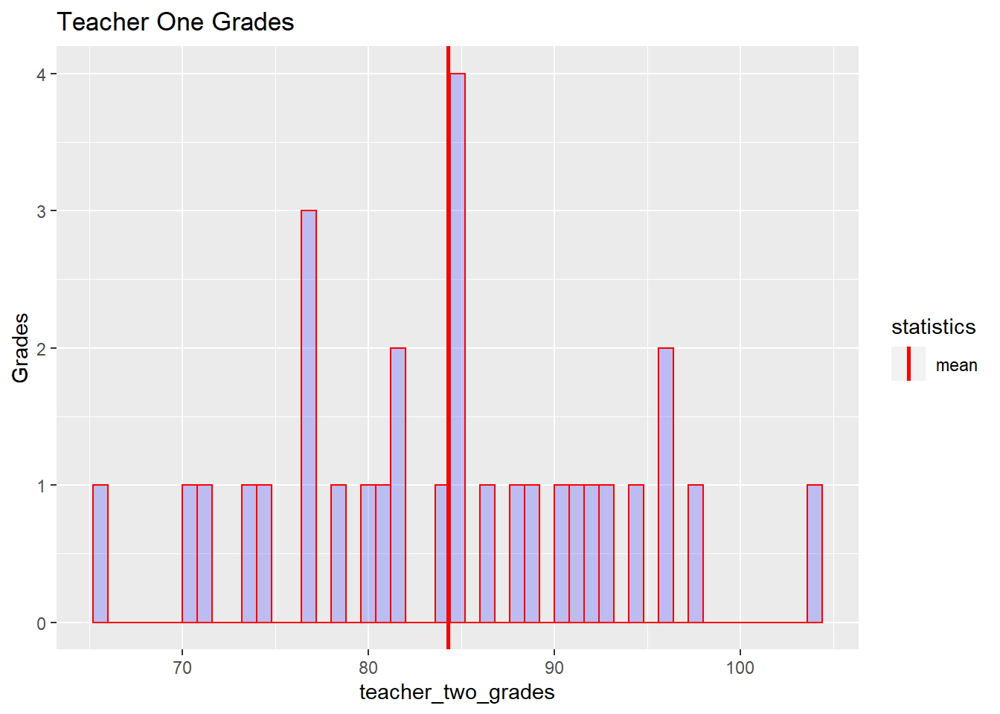

31 de Mayo del 2020 - Jhonatan Montilla
Vivir en Nueva York puede ser caro, pero ¿cuánto de caro exactamente?, en este artículo simple, encontraremos la media, la mediana y la moda de los cinco distritos de Nueva York: Brooklyn, Manhattan y Queens. Primero se descargan los conjuntos de datos a través del siguiente enlace al repositorio.
Seguidamente se importan las librerías de R:
# Load libraries
library(readr)
library(dplyr)##
## Attaching package: 'dplyr'## The following objects are masked from 'package:stats':
##
## filter, lag## The following objects are masked from 'package:base':
##
## intersect, setdiff, setequal, unionlibrary(DescTools)
library(ggplot2)
library(tidyr)Luego, carguemos los tres conjuntos de datos en R:
brooklyn_one_bed <- read_csv('brooklyn-one-bed.csv')
brooklyn_price <- brooklyn_one_bed$rentmanhattan_one_bed <- read_csv('manhattan-one-bed.csv')
manhattan_price <- manhattan_one_bed$rentqueens_one_bed <- read_csv('queens-one-bed.csv')
queens_price <- queens_one_bed$rentNota: el signo “$” se utiliza para seleccionar una columna de un conjunto de datos determinado.
Nota: “read_csv” se utiliza para cargar el archivo .csv en el objeto R.
Calculemos la media:
brooklyn_mean <- mean(brooklyn_price)
print(brooklyn_mean)## [1] 124.3832manhattan_mean <- mean(manhattan_price)
print(manhattan_mean)## [1] 196.8758queens_mean <- mean(queens_price)
print(queens_mean)## [1] 99.51765El costo promedio es bastante alto en Manhattan. ¿Alguien vive allí?
Entonces, la mediana:
brooklyn_mean <- mean(brooklyn_price)
print(brooklyn_mean)## [1] 124.3832manhattan_mean <- mean(manhattan_price)
print(manhattan_mean)## [1] 196.8758queens_mean <- mean(queens_price)
print(queens_mean)## [1] 99.51765El costo promedio es bastante alto en Brooklyn. ¿Alguien vive allí?
Entonces, la mediana:
brooklyn_median <- median(brooklyn_price)
print(brooklyn_median)## [1] 90manhattan_median <- median(manhattan_price)
print(manhattan_median)## [1] 150queens_median <- median(queens_price)
print(queens_median)## [1] 75Y finalmente la moda.
Para Brooklyn:
brooklyn_mode <- Mode(brooklyn_price)
print(brooklyn_mode)## [1] 100
## attr(,"freq")
## [1] 867R nos dice que la moda es el valor 2500, que aparece 26 veces.
Para Manhattan:
manhattan_mode <- Mode(manhattan_price)
print(manhattan_mode)## [1] 150
## attr(,"freq")
## [1] 1052R nos dice que la moda es el valor 3500, que aparece 56 veces.
Para Queens:
queens_mode <- Mode(queens_price)
print(queens_mode)## [1] 50
## attr(,"freq")
## [1] 311R nos dice que la moda es el valor 1750, que aparece 11 veces.
Estos resultados nos dicen que Manhattan es el lugar más caro para vivir, con una tendencia central de 3900, mientras que Brooklyn ocupa el segundo lugar, con una media de 3300USD, y Queens el último, con una tendencia central de 2300USD.
La mediana y la moda parecen confirmarlo también.
Si desea profundizar más, intente hacer una suposición informada mirando sus histogramas. Así es como se ven:
hist(brooklyn_price)
hist(manhattan_price)
hist(queens_price)
Ahora que sabemos qué son la media, la mediana y la moda y cómo encontrarlos usando R, hablemos de la varianza y la desviación estándar. Medidas de dispersión Diferencia
Aprender acerca de la media, la mediana y la moda es un buen lugar para comenzar a describir nuestros datos, pero ¿qué pasa si tenemos dos conjuntos de datos diferentes que se ven así?
dataset_one <- c(-4, -2, 0, 2, 4)
dataset_two <- c(-400, -200, 0, 200, 400)Aunque los valores son bastante diferentes, la media siempre es 0.
Eso no es suficiente para comunicar diferencias.
Por eso presentamos Varianza.
La varianza le dice qué tan dispersos están los puntos en el conjunto de datos:
Presentamos dos conjuntos de datos de muestra:
teacher_one_grades <- c(83.42, 88.04, 82.12, 85.02, 82.52, 87.47, 84.69, 85.18, 86.29, 85.53, 81.29, 82.54, 83.47, 83.91, 86.83, 88.5, 84.95, 83.79, 84.74, 84.03, 87.62, 81.15, 83.45, 80.24, 82.76, 83.98, 84.95, 83.37, 84.89, 87.29)teacher_two_grades <- c(85.15, 95.64, 84.73, 71.46, 95.99, 81.61, 86.55, 79.81, 77.06, 92.86, 83.67, 73.63, 90.12, 80.64, 78.46, 76.86, 104.4, 88.53, 74.62, 91.27, 76.53, 94.37, 84.74, 81.84, 97.69, 70.77, 84.44, 88.06, 91.62, 65.82)Ahora, representemos ambas con un histograma.
t1_chart <- qplot(teacher_one_grades,geom='histogram',binwidth = .8,main = 'Teacher One Grades',ylab = 'Grades',fill=I("blue"),col=I("red"),alpha=I(.2)) +geom_vline(aes(xintercept=mean(teacher_one_grades),color="mean"), linetype="solid",size=1) +scale_color_manual(name = "statistics", values = c(mean = "red" ))Expliquemos lo que hicimos:
con la función qplot creamos un histograma con las siguientes características:
tipo de gráfico de histograma un ancho de columna de 0.8 un título de “Maestro uno Grados” Eje Y llamado “Calificaciones” llenando las columnas de azul y adornadas con rojo una línea // Eje Y correspondiente a la media de “Teacher one Grades” la línea // Eje Y, tipo sólido y tamaño 1 color rojo para la línea dada
Nota: esta sintaxis es válida incluso para el siguiente gráfico de histograma.
Ahora veamos lo que obtenemos:
t1_chart
Veamos el otro. Código:
t2_chart <- qplot(teacher_two_grades,geom='histogram',binwidth = .8,main = 'Teacher One Grades',ylab = 'Grades',fill=I("blue"),col=I("red"),alpha=I(.2)) +geom_vline(aes(xintercept=mean(teacher_two_grades),color="mean"), linetype="solid",size=1) +scale_color_manual(name = "statistics", values = c(mean = "red" ))Misma sintaxis que la anterior.
Ahora veamos el gráfico:
t2_chart
Intente responder la siguiente pregunta:
“¿Qué conjunto de datos está más extendido?”
Ahora, si queremos calcular la varianza nosotros mismos, este es el proceso que seguiríamos.
Primero, calculamos la distancia de cada valor a partir de la media del conjunto de datos.
Supongamos que tenemos el siguiente conjunto de datos:
grades <- c(88, 82, 85, 84, 90)Calculamos la media y la imprimimos:
mean <- mean(grades)
print(mean)## [1] 85.8La diferencia para cada uno de ellos se ve así:
difference_one <- 88 - mean
difference_two <- 82 - mean
difference_three <- 85 - mean
difference_four <- 84 - mean
difference_five <- 90 - meanEntonces, necesitamos el promedio de las distancias.
difference_sum <- difference_one + difference_two + difference_three + difference_four + difference_five
average_difference <- difference_sum / 5
average_difference## [1] 2.842171e-15